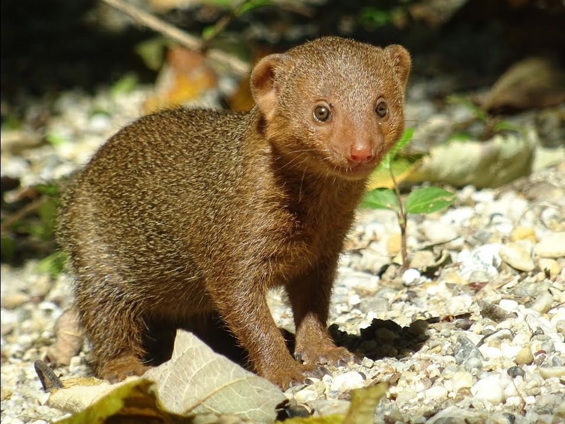

Mungosi (Herpestidae) su porodica iz skupine mačkolikih životinja. Oni se dijele na dvije potporodice koje se mogu dobro međusobno razlikovati. Jedna su Madagaskarski Euplerinae a druga Pravi (afroazijski) mungosi. Prva skupina je endemična za Madagaskar a druga je raširena najviše u Africi i Južnoj Aziji. Na otoke južnog Jadrana naseljen je početkom 20. stoljeća indijski mali mungos. Jedna od bolje proučenih vrsta iz ove porodice su merkati (Suricata suricatta). Postojbina im je u Južnoj Africi, u polupustinjskim predjelima. Domoroci ih nazivaju "čovječuljcima". Žive u podzemnim staništima, u većim skupinama. Žive u vrlo toplom podneblju, i da životinji na straži nije lako sjediti potpuno izložen suncu. Stoga se na mjestu stražara redovno smjenjuju. S namjerom da s otoka Mljeta uklone zmije otrovnice koje su postale stalna opasnost za ljudsko zdravlje, tadašnje austro-ugarsko Ministarstvo poljodjelstva u Beču, unijelo je 25. kolovoza 1910., 11 primjeraka mungosa na otok Mljet.
Muflon Muflon (Ovis aries musimon Pall.) Na otocima Korzici i Sardiniji mufloni su autohtona divljač. Zbog svoje atraktivnosti u 18. Stoljeću polako su ih naseljavali u lovišta mnogih europskih zemalja. Iako je muflon divljač Mediteranskog područja dobro se prilagodio novom biotopu. Danas se najtrofejniji mufloni uzgajaju u Češkoj. Zbog dobre adaptacije i lakog uzgoja većinom ih se drži u ograđenim lovištima. Muflon je srednje velika životinja koja u visini grebena može dostići visinu od 70 do 90 cm, dužina tijela mu može iznositi od 110 do 130 cm, a može težiti od 40 do 50 kg. Primarno stanište muflona su suhe, stjenovite planinske površine, prekrivene rijetkim stablima i na kojima raste grmovito raslinje sa vrlo malo trave za ispašu. Poput svih planinskih životinja i mufloni se zimi spuštaju u doline, a ljeti se ponovno vračaju na planine. Skroman je u ishrani, vjeran svojem staništu, otporan na mnoge bolesti i čini vrlo malo štete. Muflone nalazimo u sljedeći državama:
Domaća mačka (Felis silvestris forma catus), kućna mačka ili najčešće mačka je mali mesožder iz obitelji mačaka. Prvobitno potječe od afričke divlje mačke, a živi uz ljude već oko 3.500 godina. Mačka spada među najomiljenije kućne ljubimce. 69 milijuna mačaka živi u američkim domovima gdje su vrlo popularne, dok u cijelom svijetu živi preko 600 milijuna mačaka. Postoji veliki broj raznih pasmina domaćih mačaka, rasnih i običnih, ali postoje i bezrepe ili bezdlake mačke, zbog mutacije. Naziv domaća mačka koristi se za sve mačke koje manje-više "dobrovoljno" žive u direktnom kontaktu s ljudima i smatra se da su se svojevoljno pripitomile jer su u blizini ljudskih nastambi lako dolazile do plijena (kao što su miševi). Razlikuju se od divljih mačaka (lakše su građe i manje agresivne) i velikih mačaka (manje su i mogu mijaukati, za razliku od većine velikih mačaka). One su vješti grabljivci i veoma su inteligentne životinje. Neke od njih se mogu naučiti (katkad mogu naučiti i same) pokretati jednostavnije mehanizme, poput kvake na vratima ili ručice na vodokotliću. Mačke komuniciraju glasom (mijaukanjem), predenjem, frktanjem, režanjem i škljocanjem, kao i govorom tijela. Mačke koje žive u grupama koriste kombinaciju glasova i govora tijela za međusobno sporazumijevanje.
Mravojedi (lat. Myrmecophagidae) porodica viših sisavaca iz reda krezubica. Porodica obuhvaća samo četiri vrste podijeljene u tri roda, i jedina je porodica podroda Vermilingua. Životni prostor im se prostire Srednjom i Južnom Amerikom. Kao što im ime govori, mravojedi se hrane gotovo isključivo mravima i termitima. Kandžama otvaraju mravinjake i termitnjake, te svojim dugačkim (veliki mravojed ima jezik dug 60 cm) jezikom prevučenim ljepljivom slinom, skupljaju kukce iz nastambi. Nakon što progutaju kukce, vrlo mišićav ulazni dio želuca ih zdrobi. U zatočeništvu, jedu i ponuđeno voće. Mravojede malazimo u sljdećim staništima: Veliki mravojed (Myrmecophaga tridactyla), jedina vrsta roda Myrmecophaga Dvoprsti mravojed (Ciclopes didactylus), jedina vrsta roda Ciclopes Četveroprsti mravojedi s dvije vrste, sjeverni i južni, iz roda Tamandua, što je inače i često drugo ime ovih mravojeda
Majmuni, red sisavaca koji se po nekim obilježjima smatra najrazvijenijom životinjskom skupinom. U njihovoj tjelesnoj organizaciji ima i primitivnih obilježja, po kojima se znatno približavaju (više nego npr. zvijeri ili kopitari) svojim ishodišnim oblicima među tupajama (→ verirovke ili tupaje). Neki mogu i uspravno hodati. Oči su im okrenute naprijed, ušne su školjke nabrane. U lubanji je očni dio otraga zatvoren koštanim prstenom. U zatvorenom su zubalu 32 zuba; očnjaci su, os. u mužjaka, veliki i snažni. Majmuni se nad svim sisavcima ističu po dobro razvijenom velikome mozgu, podijeljenome na dvije polutke s dobro izraženim naborima. Od osjetila su im najbolje razvijene oči. Imaju jedan par prsnih sisa. Sjemenovodi su im potpuno spušteni u mošnje. Maternica je jednostavna. Krvne reakcije upućuju na srodnost majmuna i čovjeka. Majmuni su većinom prilagođeni životu na drveću. Na nogama imaju 5 prstiju, od kojih se palac može primicati ostalim prstima, pa mogu obuhvatiti grane. Na prstima su im izrasli nokti, koji u primitivnih majmuna imaju oblik pandži. Mnogi majmuni za prihvaćanje upotrebljavaju i rep. Najmanji su majmuni mišji lemur i patuljasti marmozet, koji često teže i manje od 100 g, a najveći su mužjaci gorila, teški i 200 kg. Mužjaci su znatno veći i jači od ženki. Majmuni žive najčešće u većim skupinama, koje vodi najjači mužjak; uzajamno se pomažu i hrane. Sporazumijevaju se različitim kretnjama i glasovima. Hrane se pretežito biljnom hranom (plodovima, gomoljima, korijenjem, pupovima i lišćem), a jedu i kukce, ptice, jaja i manje sisavce. Razmnožavaju se u bilo koje doba godine. Ženka koti obično po jedno mlado, koje se polagano razvija do potpune zrelosti (8 do 12 god.).
Merkat (lat. Suricata suricatta) jeste sisavac iz porodice mungosa. Živi u pustinji Kalahari na jugu Afrike od 5-15 godina. Mužjaci su teški oko 730 grama, a ženke su nešto lakše 720 grama. Mužjaci narastu do 35 cm duljine, a ženke oko 25 cm (bez repa, koji je obično dug između 17 i 25 cm). Tijelo je dugo i vitko, lice je usko s malim ušima u obliku polumjeseca. Boja krzna je od žute do smeđe. Na trbuhu imaju manje dlaka nego na ostatku tijela. Merkati žive u kolonijama, koje najčešće broje oko 30 jedinki. Žive u podzemnim jazbinama, koje su povezane tunelima i imaju više izlaza. Socijalna struktura kolonija merkata jedna je od složenijih u životinjskom svijetu, a jedinke su međusobno čvrsto povezane. Takvo se ponašanje najbolje vidi u čuvanju kolonije od grabljivaca, pri čemu pojedine jedinke "drže stražu" i na taj način štite ostatak kolonije.